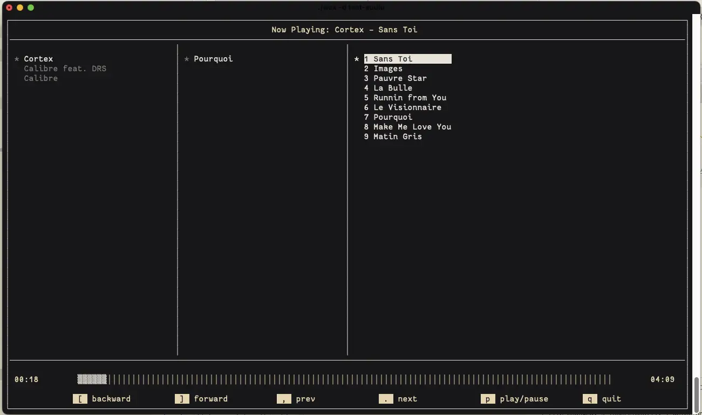
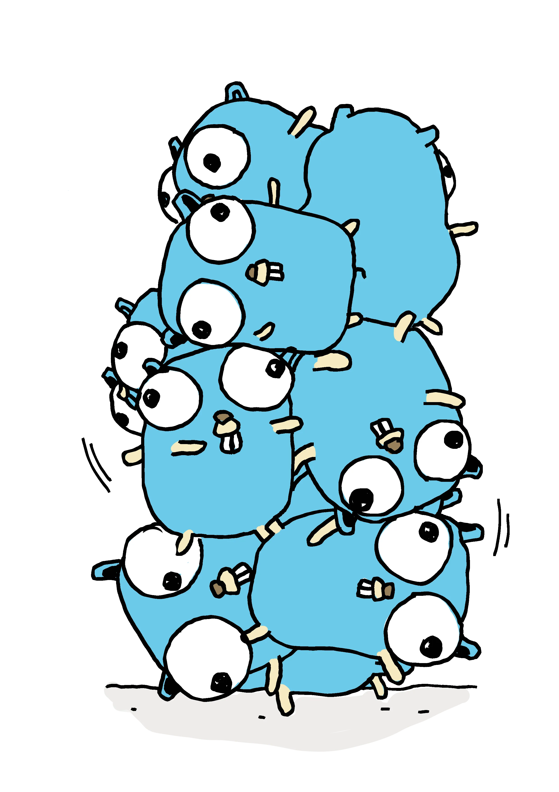

An interactive
coffee brewing timer, brew log, and recipe stash.
An interactive
coffee brewing timer, brew log, and recipe stash.Oh The Things I’ve Done
An interactive
coffee brewing timer, brew log, and recipe stash.
 A terminal based graphical music player, akin to CMUS.
Written in C using TagLib and ncurses
 Jenga is a no frills, fast-enough static site builder written in Go. It is optimized for single-page infinite scrolling blogs. Jenga takes a source directory of markdown files and an HTML template and spits outs a full HTML blog.
Written in Go